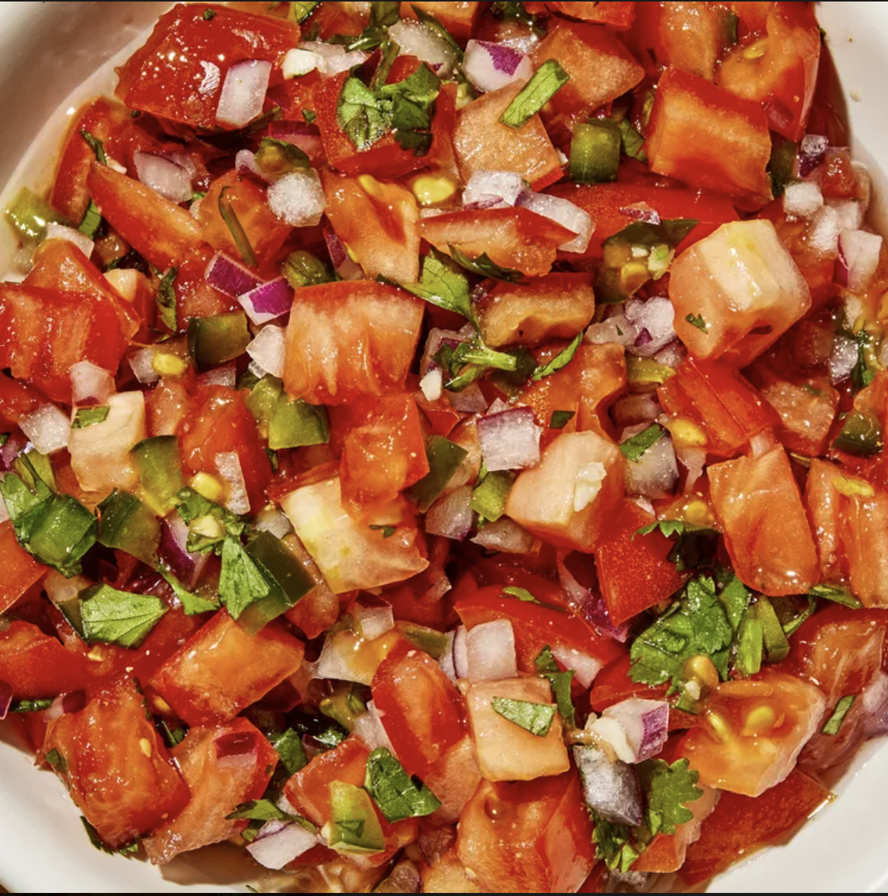

PICO DE GALLO

Description
Quick and easy pico de gallo that is a great appetizer or addition to dinner. Huge hit in my house! For more intense flavor, chill for up to 3 hours before serving.
Ingridients
- Tomatoes
- Onion
- Cilantro
- Jalapeño
- Lime
- Garlic
- Cumin
- Salt and pepper
Steps
- Stir tomatoes, onion, cilantro, jalapeño pepper, lime juice, garlic, garlic powder, cumin, salt, and pepper together in a bowl.